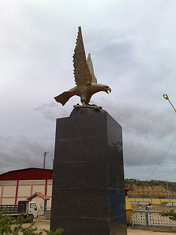
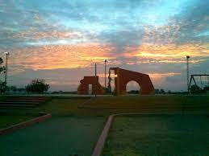
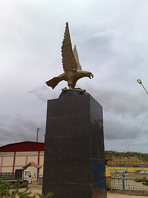
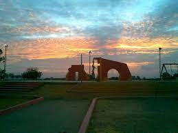

Alcaldia del Municipio Los Taques
Mision
Tramitar el buen funcionamiento con los demás responsables de los serivcios para el desarrollo sostenible de la comunidad con el fin de mejorar la calidad de vida de los habitantes, brindando condiciones adecuadas con garantía social, economica, política y de participación de toda la ciudad manteniendo una actitud flexible y de diálogo con la comunidad respetan los intereses colectivos sobre los individuos.
4 6 8
Si No Mas o Menos
Entre 1 y 4 años Entre 5 a 6 años Entre 7 a 8 años